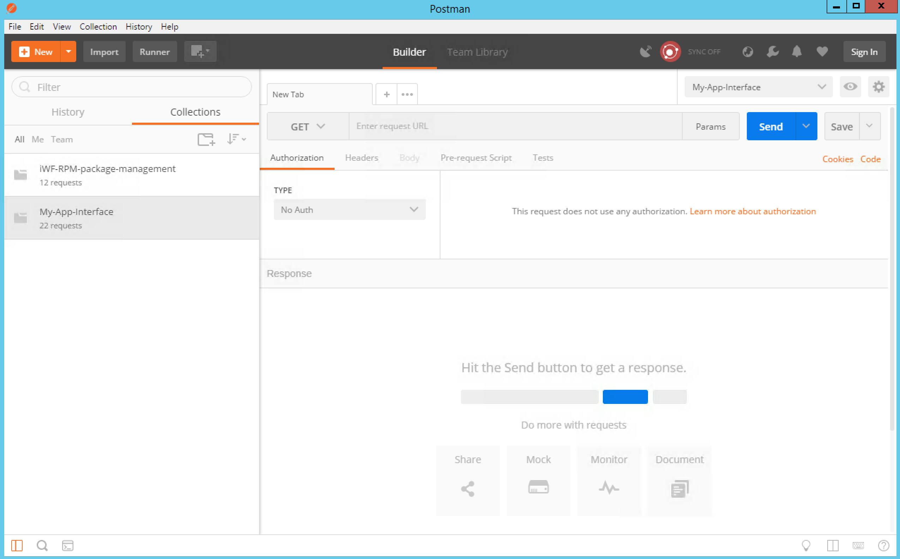
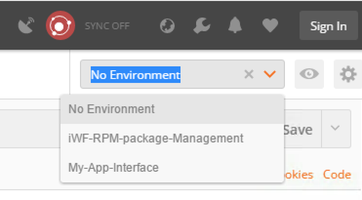
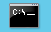
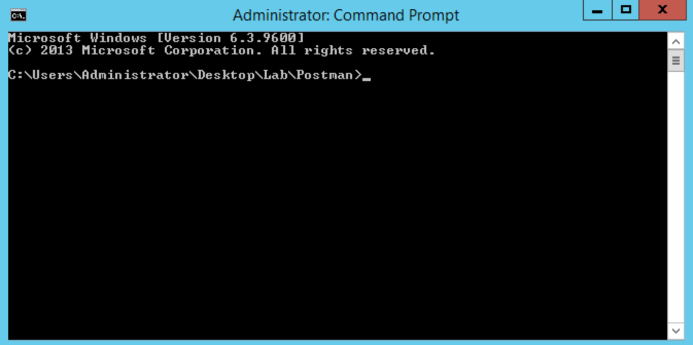
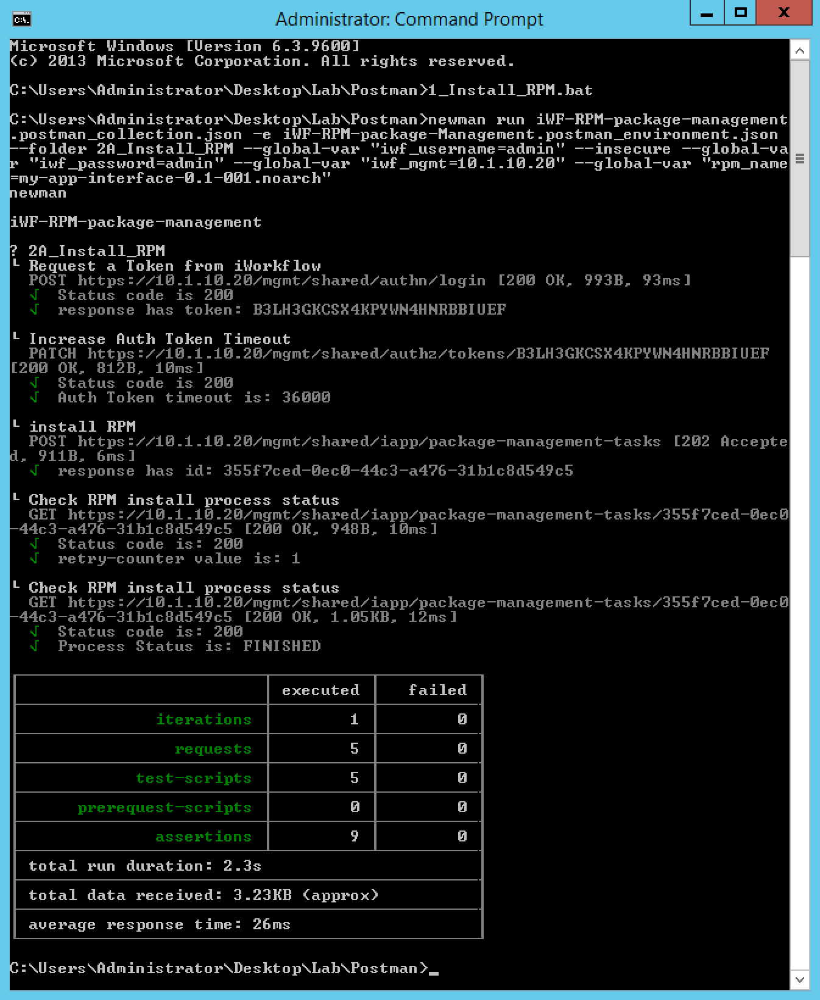
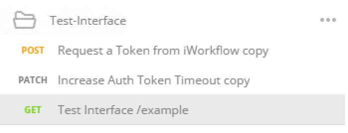
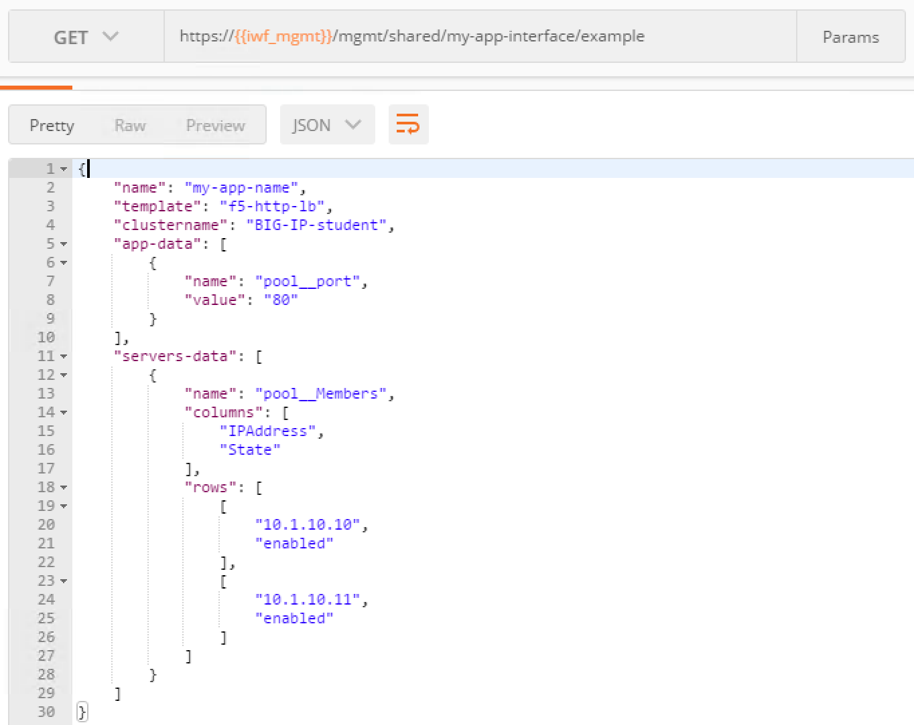

Lab 5.1 - Install the iControl LX package¶
Task 1 - Install the iControl LX RPM Package¶
To save some time, we already have pushed the iControl LX RPM on your BIG-IP platform.
You can connect to your BIG-IP platform (10.1.1.245) and check the
directory /var/config/rest/downloads:
# ls /var/config/rest/downloads/
my-app-interface-1.0-002.noarch.rpm tmp
To install your RPM, you have two different options:
- Use the Postman application and the collection already setup in it and do the calls one by one
- Use the newman scripts that will automatically run all the required API calls
Use the Postman application¶
Perform the following steps to complete this task:
Click on the Postman icon in the task bar (or on the Desktop)
You should see this:
Click on the collection
iWF-RPM-package-managementand then on the2A_Install_RPMfolder
Here you can see that this folder has 4 different API calls:
- Get an Auth token from iWF
- Extend the timeout of this token
- Install our RPM
- Check whether it installed successfully or not (you may need to do play this requests a few times before it’s fully installed)
Select the
iWF-RPM-package-Managementenvironment (top right of the window)Now, we are ready to execute our calls.
Here is the procedure:
- Select the call:
Request a Token from BIG-IPand click on Send, you may review the response to ensure it was successful - Select the call:
Increase Auth Token Timeoutand click on Send, you may review the response - Select the call:
Install RPMand click on Send, you may review the response - Select the call:
Check RPM install process statusand click on Send
- Select the call:
With the final call, you should see something like this (check the status value, it should be
FINISHED):{ "packageFilePath": "/var/config/rest/downloads/my-app-interface-1.0-002.noarch.rpm", "packageName": "my-app-interface-1.0-002.noarch", "operation": "INSTALL", "packageManifest": { "tags": [ "IAPP" ] }, "id": "73a9097e-b78a-4693-8ebe-961e27049a84", "status": "FINISHED", "startTime": "2017-11-13T06:45:20.957-0800", "endTime": "2017-11-13T06:45:21.567-0800", "userReference": { "link": "https://localhost/mgmt/shared/authz/users/admin" }, "identityReferences": [ { "link": "https://localhost/mgmt/shared/authz/users/admin" } ], "ownerMachineId": "075786c3-27a2-45da-8b06-86dcbb73a1c5", "generation": 3, "lastUpdateMicros": 1510584321566822, "kind": "shared:iapp:package-management-tasks:iapppackagemanagementtaskstate", "selfLink": "https://localhost/mgmt/shared/iapp/package-management-tasks/73a9097e-b78a-4693-8ebe-961e27049a84" }
{kind=link}
{kind=link}
{kind=link}
Use the newman script¶
Warning
If you’ve already setup the extension by following the Postman process, this will fail. You’ll need to delete the extension first. You can use the relevant postman collection/folder to do this
newman gives you the capability to run a Postman collection or a specific
folder. When you have multiple calls to do, it may be easier to use newman.
If you want more information about newman, you can review this newman_overview
newman is already installed and setup in your JumpHost. All the different
scripts that will be used in this lab are stored in the Lab folder on your
desktop.
Perform the following steps to complete this task:
To execute
newman, launch a MS Command Prompt. You have a shortcut in your taskbar that will be launched in the right folder automaticallyYou should see this:
To launch the
newmanscript that installs the RPM, run the following command:1_Install_RPMC:\Users\Administrator\Desktop\Lab\Postman>1_Install_RPM.bat
This script will execute all the API calls in the
2A_Install_RPMfolder, you should see this:
{kind=link}
{kind=link}
Task 2 - Check the Package was Successfully Installed¶
You can check that the extension was successfully installed in different ways:
Check that the extension is installed in
/var/config/rest/iapps/on iWorflow# ls /var/config/rest/iapps/ my-app-interface RPMS tmp.7399485599133304707
Check
/var/log/restnoded/restnoded.logtail /var/log/restnoded/restnoded.log Sun, 29 Oct 2017 09:53:14 GMT - finest: [LoaderWorker] triggered at path: /var/config/rest/iapps/my-app-interface/nodejs Sun, 29 Oct 2017 09:53:14 GMT - finest: [LoaderWorker] triggered at path: /var/config/rest/iapps/my-app-interface/nodejs/ictrl-app-interface-ConfigProcessor.js Sun, 29 Oct 2017 09:53:14 GMT - finest: socket 1 closed Sun, 29 Oct 2017 09:53:14 GMT - info: my-app-interface - onStart() Sun, 29 Oct 2017 09:53:14 GMT - config: [RestWorker] /shared/my-app-interface has started. Name:ipam_extension
Use Postman to test your extension. Try to access
https://10.1.1.245/mgmt/shared/my-app-interface/example. You’ll need to authenticate yourself asstudent/student. You have already a folder in your imported postman collection to do it. It’s in theMy-App-Interfacecollection and in theTest-Interfacefolder.You should see something like this:

{kind=link}
{kind=link}
{kind=link}
Note
To protect who can use this extension, we updated BIG-IP to only
allow the student user to use this extension. This is done here in the
BIG-IP interface:
{kind=link}